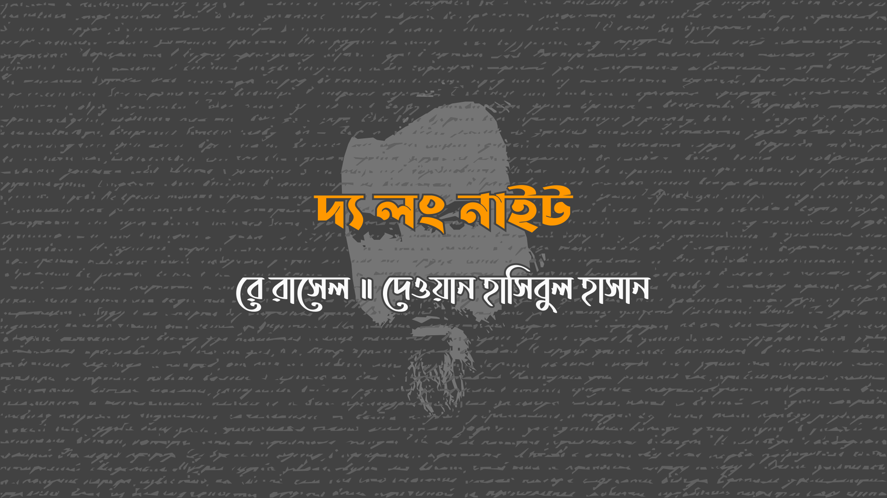

একসময়ের যুবক তৃতীয় আর্গো– এখন ছদ্দবেশ আর বয়সের ভারে জরাগ্রস্থ– পালিয়ে বেড়াচ্ছে। মনুষ্যত্ব, স্বাধীনতা, ন্যায়বিচার, ‘সংখ্যাধিক্যের মতামত’, ‘আমাদের জীবনযাত্রা’, ‘চেনা সভ্যতার সংরক্ষণ’– এর নামে জীবনভর শোষণ করার পর তার ছেলে চতুর্থ আর্গো জনসাধারণকে ক্ষেপিয়ে তুলেছে, তাড়িয়ে বেড়াচ্ছে তাকে। সে গ্রহ থেকে গ্রহান্তরে ছুটেছে, তবে তার শত্রুরা লেজ ধরেই ছিলো। জটিল ছদ্দবেশ আর প্লাস্টিক সার্জারি করে নিস্তার পাবার চেষ্টা করেছে সে, কিন্তু তার ছেলের গুপ্তচরেরা অতিবেগুনি, অবলোহিত ডাইমেনশন-র্যাপ কন্টাক্ট লেন্স দিয়ে তার মুখোশ ভেদ করে দেখতে পেত। সে এতই ক্লান্ত হয়ে পড়েছিলো যে একবার হাল ছেড়ে দিতে চেয়েছিলো– কিন্তু তারই করা নিয়মে মৃত্যুদন্ডের কথা ভাবলেই মুখ ফ্যাকাশে হয়ে আসে, যেটা এখন পবিত্রতম পন্থায় মৃত্যুদন্ড– ব্ল্যাক এলিক্সিরে সাত দিন ডুবিয়ে হত্যা।
এখন তার স্পেসশিপ ভেঙে পড়ে আছে, মেরামতের অতীত। অন্ধকারে জমাট বাঁধা ধূসর বালুর উপর দিয়ে খুঁড়িয়ে খুঁড়িয়ে চলছে সে। জিরো– তার দেওয়া গ্রহাণুটির নাম, কারণ এখানে কোন জনবসতি নেই, নেই কোন মূল্যবান ধাতু, এমনকি গ্রহাণুটি বন্ধ্যা কারণ সূর্যহীন, বিশাল জুপিটারের চিরস্থায়ী ছায়ায় এর অবস্থান। আর্গোর গন্তব্য ‘শেষ জাদুকর’ এর গুহার দিকে। বাকিসব জাদুকরের বলি হয়েছিলো আর্গোর ‘জাদুবিদ্যা বিরোধী পূণ্যাভিযান’ কর্মসূচিতে। কিন্তু গুজব প্রচলিত ছিলো এক জাদুকর জিরোতে পালিয়েছে। আর্গো মনে মনে প্রার্থনা করছে গুজবটি যেন সত্যি হয় আর শেষ জাদুকর যেন বেঁচে থাকে।
সে ছিলো অশীতিপর বৃদ্ধ, রুগ্ন, নগ্ন, অনাহারে অর্ধমৃত, শুধু জাদুবলে বেঁচে ছিলো– তবে বেঁচে ছিলো। “ওহ, আপনি,” আর্গোকে স্বাগত জানিয়ে তার বলা বাক্য। “বলবোনা আমি অবাক হয়েছি। আপনার সাহায্য প্রয়োজন, অ্যা?”
“জ্বি, জ্বি!” কর্কশ শব্দ করলো আর্গো। “আমাকে অভেদ্য ছদ্দবেশে মুড়ে দিন! দয়া করুন, আমাকে কৃপা করুন।”
“সেটা কিরকম ছদ্দবেশ?” উচ্চস্বরে বললো শেষ জাদুকর।
“আমি একটা ব্যাপারে নিশ্চিত,” বললো আর্গো, “কারণ জাদুকরেরা নির্যাতনের মুখে বলেছিলো যে সব মানুষেরাই ওয়্যার– সঠিক জাদুবলে মানুষকে ওয়্যারউলফ, ওয়্যারডগ, ওয়্যারবার্ড, যেকোনো ওয়্যার-প্রাণীতে বদলে ফেলা যায় যেমনটা তার কোষীয় গঠনে লুকানো থাকে। এমন প্রাণী, যা বনে আমি ধরা না পড়ে পালাতে পারবো!” “সেটা ঠিকই,” বললো শেষ জাদুকর। “কিন্তু ধরুণ আপনি একটা ওয়্যারবাগ হয়ে গেলেন, যেটা পায়ের তলায় পড়ে পিষে যেতে পারে? অথবা একটা ওয়্যারফিশ হয়ে গেলেন, যেটা এই গুহার মেঝেতে যন্ত্রণায় তড়পাতে তড়পাতে মারা যেতে পারে?”
“তবু সেই মৃত্যুও,” কেঁপে উঠলো আর্গো, “আইনের মৃত্যদন্ড থেকে ভাল হবে।”
“তা বেশ,” শ্রাগ করলো শেষ জাদুকর। সে হাত মেলে নাটকীয় অঙ্গভঙ্গি করলো আর উচ্চারণ করলো এক কাটখোট্টা শব্দ।
এসব ছিলো ২৯০৪ সালের জুলাই এর ঘটনা। একশ বছর পর, ৩০০৪ এর জুলাই, আর্গো এখনো জিরোতে বেঁচে আছে। যদিও সঠিকভাবে বলতে গেলে তাকে সুখী বলা যাবে না। আদপে, সে এখন ব্ল্যাক এলিক্সিরে ডুবে শান্তির মৃত্যুর স্বপ্ন দেখে আর প্রার্থনা করে। আর্গো পরিণত হয়েছে সেই বিরল প্রাণীতে- ওয়্যারভ্যাম্পায়ার। ভ্যাম্পায়ারের একমাত্র খাবার রক্ত, আর যখন শেষ জাদুকরের শিরাও শুকিয়ে গেলো, শুরু হলো তার অনশন পর্ব। ক্ষুধা-তৃষ্ণা বিদ্রোহ করলো আর্গোর ভেতর। তারা এখনো বিদ্রোহ করে চলেছে, কোটিগুণ উন্মাদনায়, কেননা ভ্যাম্পায়াররা অমর। তাদের মৃত্যু কেবল হৃদপিন্ডে কাঠের কাঠি গেঁথে হতে পারে, কিন্তু জিরো বন্ধ্যা, কোন গাছপালা নেই। তাদের মৃত্যু কেবল রুপার বুলেটে হতে পারে, কিন্তু জিরো মূল্যবান ধাতু বঞ্চিত। তাদের মৃত্যু সূর্যরশ্মি তে হতে পারে, কিন্তু জুপিটারের ছায়ায় জিরো কখনো সূর্য দেখে না। এসব ছাড়াও আর্গো আরো এক কারণে জর্জরিত- ভ্যাম্পায়াররা শুধু দিনে ঘুমায় আর জিরো দিনশূন্য।